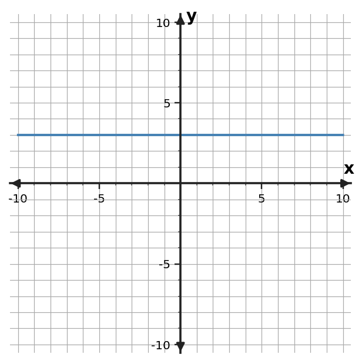

Rate of Change and Slope
Section 2.1
Build meaning across graphs, equations, tables, and contexts.
Learning Target
Students will interpret slope as a measure of constant rate of change.
- I can construct rate-of-change statements from tables, graphs, and situations.
- I can apply slope calculations to interpret constant change between quantities.
- I can determine whether a slope value is reasonable for a given context.
Vocabulary / Key Notation Preview
slope · rate of change · rise/run · positive/negative/zero/undefined slope
Sort the vocabulary. Write each vocabulary word in the column that best matches what you know right now. You may move a word later.
| Know for sure | Recognize | Don't know yet |
|---|---|---|
What's to Come
Circle anything familiar, underline symbols, labels, conditions, data, or features that seem important, and write short notes about what you think may matter later.
A student is tracking distance from a starting point during a steady walk. Study the graph before using any formal slope formula.

(a) Describe how the distance changes each minute. (b) Use two visible points to estimate how many blocks are added for each additional minute. (c) Predict the distance at 5 minutes and explain what feature of the graph makes that prediction reasonable.
Let's Get Started
Skim the section. Record what catches your attention before you read closely.
| What I noticed | |
|---|---|
| What I predict | |
| What I wonder |
Annotate the words and visuals together. Underline evidence, circle or highlight bold vocabulary, label arrows, measurements, or important features, connect sentences to figures, and jot short questions or connections in the margins.
I can construct rate-of-change statements from tables, graphs, and situations.
A rate of change compares how much one quantity changes with how much another quantity changes. In a table, the comparison is visible in the differences between consecutive rows. If equal changes in the input always produce equal changes in the output, the relationship has a constant rate of change. The rate should be stated with units whenever the quantities have units: dollars per ticket, meters per second, or degrees per hour.
On a graph, the same idea appears as a consistent change in vertical position for a chosen horizontal change. A straight line is the visual signal that the rate stays constant. A line that rises from left to right has a positive slope; a line that falls has a negative slope. A horizontal line has zero slope because the output does not change even though the input does.
A situation gives the rate meaning. “The temperature changes by -3 degrees per hour” says more than the number -3 alone: the sign describes direction, and the units identify which quantities are being compared. When you translate among a table, graph, and context, the numerical rate should tell the same story in every form.
- What does a constant rate of change look like in a table?
- How does the direction of a line relate to the sign of its rate of change?
- Why should a contextual rate include units?
If $x$ increases by 2 while $y$ decreases by 6, the unit rate is $-6/2=-3$.
A straight line falling left to right shows a constant negative rate.
In $y=-3x+8$, the coefficient $-3$ is the rate of change.
“The amount drops 3 units per hour” matches the same rate.
Example 1: Rate of Change from a Table
Use the table to determine the constant rate of change in $y$ per 1 unit of $x$.
| $x$ | $y$ |
|---|---|
| $0$ | $8$ |
| $2$ | $4$ |
| $4$ | $0$ |
| $6$ | $-4$ |
You Try It 1: Rate of Change from a Table
Use the table to determine the constant rate of change in $y$ per 1 unit of $x$.
| $x$ | $y$ |
|---|---|
| $0$ | $6$ |
| $2$ | $0$ |
| $4$ | $-6$ |
| $6$ | $-12$ |
Example 2: Interpret a Contextual Rate
The temperature drops 15 degrees over 5 hours. What is the constant rate in degrees per hour?
You Try It 2: Interpret a Contextual Rate
A trail rises 18 meters over a horizontal distance of 6 meters. What is the constant rate in meters of rise per meter horizontally?
I can apply slope calculations to interpret constant change between quantities.
Slope is the constant rate of change of a line. It is computed as vertical change divided by horizontal change, often described as rise/run. Using two points $(x_1,y_1)$ and $(x_2,y_2)$, the calculation is $m=\frac{y_2-y_1}{x_2-x_1}$. The order of subtraction does not matter as long as the same point is used first in both the numerator and denominator.
A slope triangle on a graph makes the ratio visible. Move horizontally from one point to another, then compare the corresponding vertical change. The graph scale matters: one grid square does not automatically mean one unit. Read the axis labels before assigning numbers to the rise and run.
Special lines help clarify what the ratio means. A horizontal line has slope $0$ because its vertical change is zero. A vertical line has undefined slope because its horizontal change is zero, which would require division by zero. Positive and negative slopes describe direction, while the magnitude describes how quickly the output changes for each unit of input.
- In the slope formula, what two changes are being compared?
- Why does changing the subtraction order in both numerator and denominator keep the slope the same?
- Why is a vertical line different from a horizontal line when slope is computed?
$$m=\frac{\Delta y}{\Delta x}=\frac{y_2-y_1}{x_2-x_1}$$
| Line behavior | Slope |
|---|---|
| rises left to right | positive |
| falls left to right | negative |
| horizontal | 0 |
| vertical | undefined |
Example 3: Slope from Two Points
Find the slope of the line through $(2,7)$ and $(6,-1)$.
You Try It 3: Slope from Two Points
Find the slope of the line through $(4,2)$ and $(4,8)$.
Example 4: Slope from a Graph
Determine the slope of the line shown. Use two grid points to support your calculation.

You Try It 4: Slope from a Graph
Determine the slope of the line shown. Use two grid points to support your calculation.

Example 5: Classify Slope
Classify the slope of a line that falls from left to right.
You Try It 5: Classify Slope
Classify the slope of the horizontal line $y=-3$.
I can determine whether a slope value is reasonable for a given context.
A slope value is not just a result to calculate; it should make sense for the representation and the situation. Begin by checking the sign. If a quantity decreases as the input increases, a positive slope should raise a question. If the graph rises left to right, a negative slope is inconsistent with what the graph shows.
Next check size and units. A slope of 300 miles per hour may be mathematically possible but unreasonable for a walking-speed context. A rate written as “3 hours per mile” is not the same quantity as “3 miles per hour.” The numerator and denominator should match the vertical and horizontal quantities in the problem.
Finally, check the calculation structure. Inconsistent subtraction order can reverse the sign, and ignoring graph scale can change the magnitude. Reasonableness checks connect the arithmetic back to the model: direction, size, units, and representation should all agree.
- What two quick checks can you make before accepting a slope value?
- How can graph scale affect a slope calculation?
- If a reported slope disagrees with the direction of change in context, what should you investigate?
- Direction: Does the sign match increasing/decreasing behavior?
- Scale: Did you use axis values, not just grid-square counts?
- Units: Are the vertical units divided by the horizontal units?
- Size: Is the magnitude believable in the situation?
Example 6: Check and Repair a Slope
Two points are $(1,4)$ and $(5,12)$. Sam uses $\frac{12-4}{1-5}=-2$. Identify and repair the subtraction-order error.
You Try It 6: Check and Repair a Slope
A water level drops 12 cm in 4 minutes. Mia reports a slope of $+3$ cm/min. Decide whether the reported slope is reasonable and correct it if needed.
Vocabulary / Notation Reference
Revisit the preview terms now that you have used them: slope · rate of change · rise/run · positive/negative/zero/undefined slope.
Summary
- Rate of change compares output change to input change and carries units in context.
- Slope is the constant rate of change of a line: $m=\Delta y/\Delta x$.
- Positive, negative, zero, and undefined slopes describe distinct line behaviors.
- A reasonable slope agrees with the graph direction, scale, units, and context.
Common Mistakes
| Mistake | Repair |
|---|---|
| Treating the starting value as the slope | Slope describes change, not where the relationship begins. |
| Mixing point order in the slope formula | Use the same point first in both numerator and denominator. |
| Counting grid squares instead of reading scale | Convert each horizontal and vertical step using the axis labels. |
| Calling a vertical line slope 0 | Vertical slope is undefined; horizontal slope is 0. |